Berita cryptoCrypto news
Kabar terbaru yang sudah dicek ke sumbernya. Tiap artikel punya poin utama, konteks, dan daftar sumber.The latest stories, checked against their sources. Every article has key points, context and a source list.
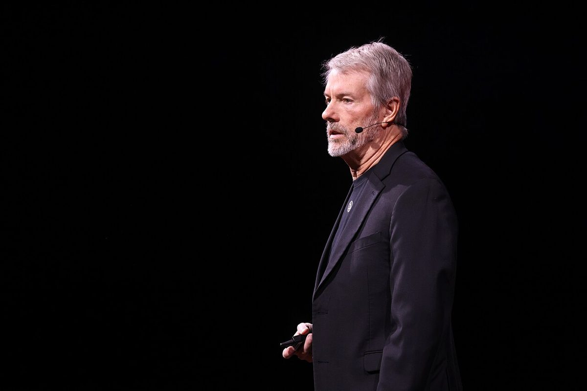
MSCI resmi coret Strategy (MSTR) dari MSCI USA Index mulai 30 November; laporan 13F: Barclays dan Citigroup tambah ETF BitcoinMSCI officially removes Strategy (MSTR) from the MSCI USA Index from 30 November; 13F filings: Barclays and Citigroup add Bitcoin ETFs
Hasil index review November 2026 dari MSCI resmi mengeluarkan Strategy, pemegang Bitcoin korporat terbesar, dari MSCI USA Index, berlaku per penutupan 30 November. Di sisi lain, laporan 13F kuartal III menunjukkan Barclays menambah kepemilikan ETF Bitcoin BlackRock (IBIT) 48% dan Citigroup membuka posisi baru di ETF Bitcoin Fidelity (FBTC).MSCI's November 2026 index review officially removes Strategy, the largest corporate Bitcoin holder, from the MSCI USA Index, effective at the close of 30 November. Separately, Q3 13F filings show Barclays increased its holding of BlackRock's Bitcoin ETF (IBIT) by 48% and Citigroup opened a new position in Fidelity's Bitcoin ETF (FBTC).

Glassnode: suplai stablecoin turun US$14,2 miliar dalam 30 hari, K33: leverage futures BTC dekati level ekstrem; ECB: lebih dari sepertiga pemegang crypto zona euro punya stablecoinGlassnode: stablecoin supply falls US$14.2 billion in 30 days, K33: BTC futures leverage nears extreme levels; ECB: over a third of euro area crypto holders own stablecoins
Tiga laporan riset menggambarkan pasar crypto yang sedang kekurangan dana segar: suplai stablecoin menyusut paling cepat sejak Juni 2022 (Glassnode), sementara open interest futures Bitcoin berada di level tertinggi dua tahun (K33). ECB merilis data baru soal siapa yang memegang stablecoin di zona euro. Protokol DeFi Hyperwave juga mengumumkan akan tutup 16 Desember.Three research reports paint a picture of a crypto market short on fresh money: stablecoin supply is shrinking at the fastest pace since June 2022 (Glassnode), while Bitcoin futures open interest is at a two-year high (K33). The ECB released new data on who holds stablecoins in the euro area. DeFi protocol Hyperwave also announced it will shut down on 16 December.

Saham AS makin masuk blockchain: OKXICE mulai 23 November, Pyth jadi distributor data NYSE, SEC ikut masuk gugatan perpetual saham; Rusia buka BTC, ETH, USDT untuk ritel 17 NovemberUS stocks move further onto blockchain: OKXICE starts 23 November, Pyth becomes NYSE data distributor, SEC joins single-stock perpetuals lawsuit; Russia opens BTC, ETH, USDT to retail on 17 November
OKXICE, joint venture OKX dan induk NYSE (ICE), akan mulai memperdagangkan saham AS versi token pada 23 November. Pyth Network kini resmi mendistribusikan data real-time NYSE. Di pengadilan, SEC ikut mengajukan amicus brief dalam gugatan soal perpetual futures saham. Sementara itu, Bank Sentral Rusia membuka akses Bitcoin, Ether, dan USDT untuk investor ritel mulai 17 November.OKXICE, the joint venture of OKX and NYSE parent ICE, will begin trading tokenized US stocks on 23 November. Pyth Network now officially distributes real-time NYSE data. In court, the SEC filed an amicus brief in the lawsuit over single-stock perpetual futures. Meanwhile, the Bank of Russia is opening Bitcoin, Ether and USDT to retail investors from 17 November.

IPO Anthropic diburu investor: order sudah menutup semua saham, bankir pertimbangkan harga di atas US$78 dan valuasi US$1,5 triliun lebihInvestors chase Anthropic IPO: orders already cover all shares, bankers weigh pricing above US$78 and a valuation of US$1.5 trillion or more
Permintaan investor untuk IPO Anthropic, pembuat Claude, sudah menutup seluruh saham yang ditawarkan sejak roadshow dimulai, menurut Bloomberg News. Financial Times melaporkan bankir Anthropic menimbang menaikkan harga di atas rentang US$70-78 per saham, yang bisa membawa valuasi ke US$1,5 triliun atau lebih. Harga dijadwalkan ditetapkan 18 November dan saham mulai diperdagangkan di Nasdaq 19 November.Investor demand for the IPO of Anthropic, maker of Claude, has covered all shares on offer since the roadshow began, according to Bloomberg News. The Financial Times reported Anthropic's bankers are weighing raising the price above the US$70-78 per share range, which could take the valuation to US$1.5 trillion or more. Pricing is scheduled for 18 November and shares are set to begin trading on Nasdaq on 19 November.
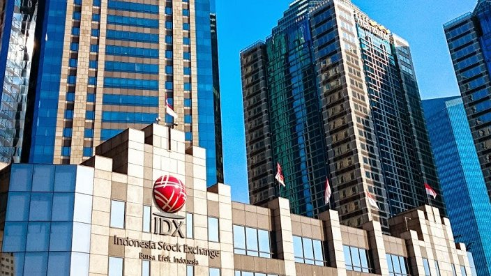
MSCI keluarkan BRPT dan BRMS dari indeks global, 7 saham RI didepak dari Small Cap; dolar AS menguat, yen dekati 160, emas di bawah US$4.000MSCI removes BRPT and BRMS from its global index, 7 Indonesian stocks dropped from Small Cap; US dollar strengthens, yen nears 160, gold below US$4,000
Hasil review MSCI November 2026 yang dirilis Kamis pagi WITA mengeluarkan Barito Pacific (BRPT) dan Bumi Resources Minerals (BRMS) dari MSCI Indonesia Index, tanpa ada saham RI yang ditambahkan. Di pasar global, dolar AS menguat tajam setelah data inflasi AS yang panas, menekan euro, yen, dan emas.MSCI's November 2026 review, released Thursday morning WITA, removes Barito Pacific (BRPT) and Bumi Resources Minerals (BRMS) from the MSCI Indonesia Index, with no Indonesian stocks added. In global markets, the US dollar strengthened sharply after hot US inflation data, pressuring the euro, yen and gold.

ETF Bitcoin spot AS outflow 4 hari beruntun (~US$1,14 miliar), BitMine rugi US$6,3 miliar karena ETH, nasib Strategy di indeks MSCI diumumkan besok pagiUS spot Bitcoin ETFs see outflows for 4 straight days (~US$1.14 billion), BitMine loses US$6.3 billion on ETH, Strategy's MSCI index fate announced tomorrow morning
ETF Bitcoin spot AS mencatat arus keluar bersih empat hari perdagangan berturut-turut, total sekitar US$1,14 miliar. BitMine Immersion (BMNR), perusahaan treasury ETH, melaporkan rugi bersih US$6,31 miliar untuk tahun fiskal 2026, mayoritas rugi belum terealisasi. MSCI mengumumkan hasil index review November sekitar pukul 06.00 WITA 12 November, termasuk apakah Strategy (MSTR) dikeluarkan.US spot Bitcoin ETFs recorded net outflows for four consecutive trading days, totaling about US$1.14 billion. ETH treasury company BitMine Immersion (BMNR) reported a net loss of US$6.31 billion for fiscal 2026, mostly unrealized. MSCI announces its November index review results at around 06:00 WITA on 12 November, including whether Strategy (MSTR) is removed.
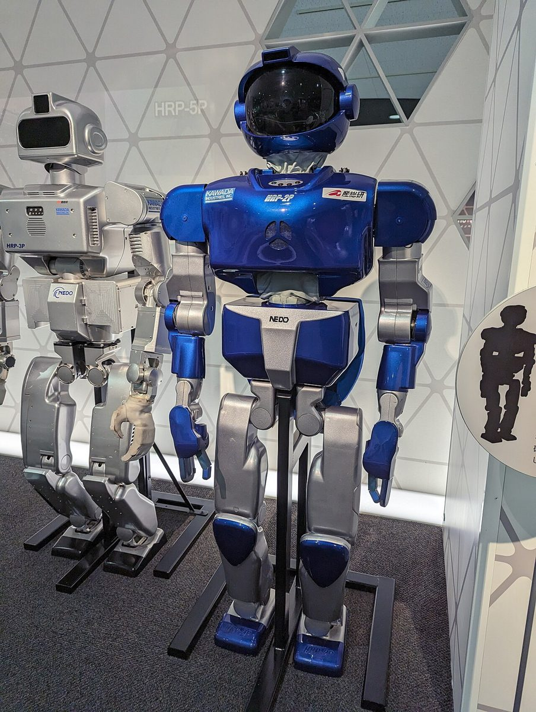
Google DeepMind rilis Gemini Robotics 2.5, robot humanoid sukses 96% di pabrik Mercedes-Benz; pendapatan CoreWeave naik 168%Google DeepMind releases Gemini Robotics 2.5, humanoid robot hits 96% success at Mercedes-Benz plants; CoreWeave revenue up 168%
Google DeepMind memperkenalkan Gemini Robotics 2.5, model vision-language-action (VLA) paling canggih mereka, yang diuji di lini produksi Mercedes-Benz dengan robot Apollo 2 dari Apptronik. Di sisi infrastruktur AI, CoreWeave melaporkan pendapatan kuartal III US$3,66 miliar dan menaikkan panduan 2026.Google DeepMind introduced Gemini Robotics 2.5, its most capable vision-language-action (VLA) model, tested on Mercedes-Benz production lines with Apptronik's Apollo 2 robot. On the AI infrastructure side, CoreWeave reported Q3 revenue of US$3.66 billion and raised its 2026 guidance.
Deutsche Bank resmi buka layanan kustodian Bitcoin dan Ether, ECB peringatkan digital euro bisa mundur, FSB minta Turki bikin aturan stablecoinDeutsche Bank launches Bitcoin and Ether custody, ECB warns digital euro could be delayed, FSB urges Türkiye to create stablecoin rules
Deutsche Bank, bank terbesar Jerman, menyatakan layanan kustodian aset digitalnya sudah berjalan untuk klien institusi dan korporasi di Eropa. ECB memperingatkan peluncuran digital euro bisa tertunda jika undang-undangnya telat disahkan. Financial Stability Board (FSB) merekomendasikan Turki membuat rezim khusus stablecoin.Deutsche Bank, Germany's largest bank, said its digital asset custody service is live for institutional and corporate clients in Europe. The ECB warned the digital euro launch could be delayed if its legislation is adopted late. The Financial Stability Board (FSB) recommended that Türkiye create a dedicated stablecoin regime.

EIA perkirakan Brent bertahan dekat US$100 sampai akhir 2026, India larang ekspor "black mass" baterai lithium-ionEIA sees Brent staying near US$100 through end-2026, India bans exports of lithium-ion battery "black mass"
Badan Informasi Energi AS (EIA) dalam Short-Term Energy Outlook November memproyeksikan rata-rata harga minyak Brent US$97,44 per barel pada 2026 dan US$85,78 pada 2027. India melarang ekspor black mass, bubuk hasil cacahan baterai bekas yang mengandung lithium, kobalt, dan nikel, untuk memperkuat daur ulang dalam negeri.The US Energy Information Administration (EIA), in its November Short-Term Energy Outlook, projects Brent crude to average US$97.44 per barrel in 2026 and US$85.78 in 2027. India banned exports of black mass, the powder from shredded used batteries containing lithium, cobalt and nickel, to strengthen domestic recycling.
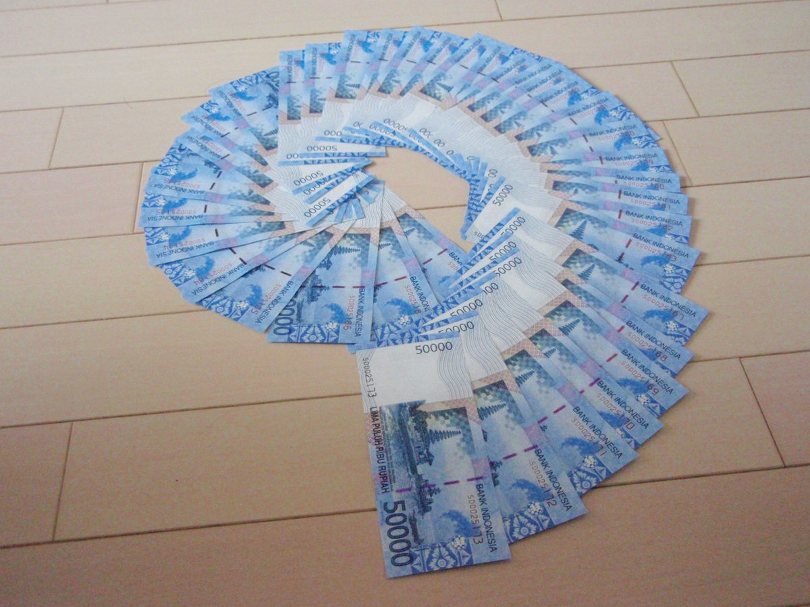
Rupiah melemah ke Rp18.149 per dolar AS, IHSG turun 0,21% ke 5.115 jelang pengumuman MSCIRupiah weakens to Rp18,149 per US dollar, IHSG falls 0.21% to 5,115 ahead of MSCI announcement
Rupiah ditutup melemah 0,48% ke Rp18.149 per dolar AS pada Rabu (11/11/2026), tertekan dolar AS yang menguat setelah data inflasi AS lebih panas dari perkiraan. IHSG ditutup turun 0,21% ke 5.115,04 menjelang pengumuman hasil review indeks MSCI pada Kamis dini hari.The rupiah closed 0.48% weaker at Rp18,149 per US dollar on Wednesday (11/11/2026), pressured by a stronger US dollar after hotter-than-expected US inflation data. The IHSG (Jakarta Composite Index) closed 0.21% lower at 5,115.04 ahead of MSCI's index review results early Thursday.

Pejabat The Fed makin hawkish usai CPI panas: Logan minta minimal 2 kenaikan lagi, Goldman tambah prediksi naik Maret 2027Fed officials turn more hawkish after hot CPI: Logan calls for at least 2 more hikes, Goldman adds a March 2027 hike forecast
Presiden Dallas Fed Lorie Logan menilai The Fed perlu setidaknya dua kali lagi menaikkan suku bunga 25 basis poin. Presiden Philadelphia Fed Anna Paulson juga mendukung pengetatan bertahap. Goldman Sachs kini memperkirakan kenaikan di Desember dan Maret 2027. Di Inggris, lembaga riset NIESR menilai Bank of England perlu suku bunga sekitar 5%.Dallas Fed President Lorie Logan said the Fed needs to raise rates by 25 basis points at least two more times. Philadelphia Fed President Anna Paulson also backed gradual tightening. Goldman Sachs now expects hikes in December and March 2027. In the UK, the NIESR think tank said the Bank of England needs rates of around 5%.

Pendapatan OpenAI kuartal III tembus US$10 miliar, TSMC siapkan hingga US$500 juta untuk Anthropic dan OpenAI, Alibaba lanjutkan IPO unit chipOpenAI Q3 revenue tops US$10 billion, TSMC sets aside up to US$500 million each for Anthropic and OpenAI, Alibaba moves ahead with chip unit IPO
Pendapatan OpenAI naik hampir 50% dari kuartal sebelumnya menjadi sekitar US$10 miliar, tetapi perusahaan masih rugi besar. Dewan TSMC menyetujui investasi maksimal US$500 juta di saham Anthropic dan maksimal US$500 juta di saham preferen OpenAI. Alibaba mendapat persetujuan HKEX untuk melanjutkan rencana spin-off unit chip T-Head.OpenAI's revenue rose nearly 50% from the previous quarter to about US$10 billion, but the company is still losing heavily. TSMC's board approved investments of up to US$500 million in Anthropic shares and up to US$500 million in OpenAI preferred stock. Alibaba received HKEX approval to proceed with its planned spin-off of chip unit T-Head.

Perusahaan publik sudah jual 108.247 BTC sepanjang 2026, sementara Forward Industries tambah SOL dan Tron Inc. cetak laba Q3Public companies have sold 108,247 BTC so far in 2026, while Forward Industries adds SOL and Tron Inc. posts Q3 profit
Menurut Lookonchain, 14 perusahaan publik sudah menjual 108.247 BTC senilai sekitar US$8,08 miliar tahun ini, dipimpin penambang MARA dan Riot. Di sisi lain, perusahaan treasury Solana Forward Industries menambah sekitar 226.000 SOL, dan Tron Inc. melaporkan laba bersih kuartal III US$14,9 juta.According to Lookonchain, 14 public companies have sold 108,247 BTC worth about US$8.08 billion this year, led by miners MARA and Riot. Meanwhile, Solana treasury company Forward Industries added about 226,000 SOL, and Tron Inc. reported Q3 net income of US$14.9 million.

Rangkuman regulasi AS: kasus SEC turun ke 348, Nasdaq peringatkan risiko tokenisasi, hakim tolak gugatan Novig, pendapatan Polymarket tembus US$1,8 miliarUS regulation roundup: SEC cases fall to 348, Nasdaq warns of tokenization risks, judge rejects Novig's bid, Polymarket revenue tops US$1.8 billion
SEC mencatat 348 tindakan penegakan hukum di tahun fiskal 2026. Nasdaq meminta SEC membuat aturan tokenisasi yang netral teknologi dan saling terhubung. Seorang hakim federal di New York menolak permohonan Novig untuk menghentikan penerapan hukum judi negara bagian. Polymarket menyebut pendapatan tahunannya di atas US$1,8 miliar.The SEC recorded 348 enforcement actions in fiscal year 2026. Nasdaq asked the SEC to adopt tokenization rules that are technology-neutral and interoperable. A federal judge in New York rejected Novig's request to block enforcement of state gambling law. Polymarket said its annualized revenue is above US$1.8 billion.
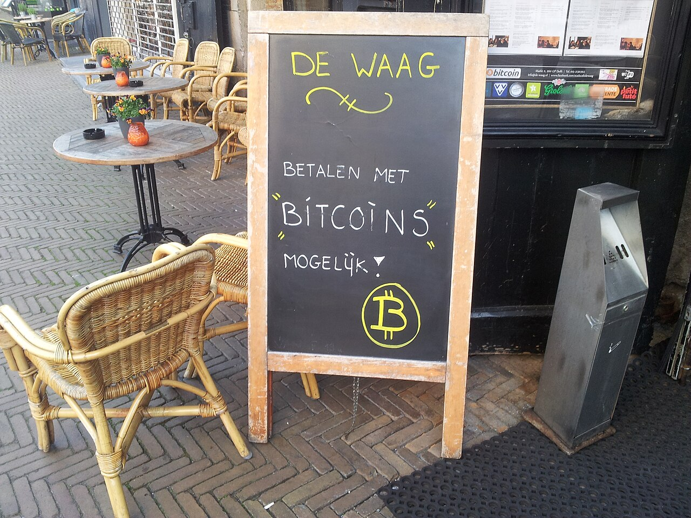
Crypto makin masuk ke pembayaran: Square tuntaskan target pembayaran Bitcoin untuk merchant AS, Visa tambah Monad, bank besar siapkan US$270 juta untuk stablecoinCrypto moves further into payments: Square hits its target for Bitcoin payments at US merchants, Visa adds Monad, big banks line up US$270 million for a stablecoin
Square menargetkan 10 November sebagai batas akhir pengaktifan otomatis pembayaran Bitcoin via Lightning untuk merchant AS yang memenuhi syarat. Di hari yang sama, Visa menambahkan blockchain Monad ke program settlement stablecoin-nya, dan Bloomberg melaporkan Goldman Sachs, Citi, dan bank lain berkomitmen sekitar US$270 juta untuk usaha stablecoin bersama.Square set 10 November as the target date for automatically enabling Bitcoin payments via Lightning for eligible US merchants. On the same day, Visa added the Monad blockchain to its stablecoin settlement program, and Bloomberg reported that Goldman Sachs, Citi and other banks have committed about US$270 million to a joint stablecoin venture.

Inflasi AS Oktober lebih panas dari perkiraan: yield obligasi 10 tahun sempat tembus 5%, emas turun 2%, Bitcoin ke terendah sejak AgustusUS October inflation runs hotter than expected: 10-year yield briefly tops 5%, gold falls 2%, Bitcoin hits lowest since August
Indeks harga konsumen (CPI) AS naik 0,4% di bulan Oktober, di atas perkiraan 0,3%. Inflasi inti naik 0,3%, juga di atas perkiraan. Pasar kini memperhitungkan penuh kenaikan suku bunga The Fed pada Desember. Yield Treasury 10 tahun sempat di atas 5%, emas turun sekitar 2%, dan Bitcoin sempat di bawah US$73.000.The US consumer price index (CPI) rose 0.4% in October, above the 0.3% forecast. Core inflation rose 0.3%, also above forecasts. Markets now fully price in a Fed rate hike in December. The 10-year Treasury yield briefly topped 5%, gold fell about 2%, and Bitcoin briefly dropped below US$73,000.
IPO Anthropic, pembuat Claude, bidik dana hingga US$64,4 miliar dengan valuasi sampai US$1,4 triliunAnthropic, maker of Claude, targets up to US$64.4 billion in IPO at a valuation of up to US$1.4 trillion
Anthropic dan sebagian pemegang sahamnya berencana menjual 825 juta saham di rentang harga US$70-78 per saham, menurut prospektus terbaru yang diajukan ke SEC. Saham dijadwalkan mulai diperdagangkan di Nasdaq pada 19 November dengan kode ANT, menurut Reuters.Anthropic and some of its shareholders plan to sell 825 million shares in a price range of US$70-78 per share, according to an updated prospectus filed with the SEC. The shares are scheduled to start trading on the Nasdaq on 19 November under the symbol ANT, according to Reuters.
BEI ubah metodologi saham HSC: daftar bertambah 300 jadi 383 saham, akan dikeluarkan dari perhitungan IHSGIDX changes its HSC stock methodology: list grows by 300 to 383 stocks, to be removed from the JCI calculation
Bursa Efek Indonesia (BEI) mengubah cara menyaring saham dengan kepemilikan sangat terkonsentrasi (Hidden Shareholder Concentration/HSC). Kini seluruh saham tercatat disaring, dan saham yang 92,5% atau lebih dikuasai 10 pemegang saham atau kurang masuk daftar HSC. Total saham HSC menjadi 383.The Indonesia Stock Exchange (IDX/BEI) has changed how it screens stocks with highly concentrated ownership (Hidden Shareholder Concentration, HSC). All listed stocks are now screened, and stocks of which 92.5% or more is held by 10 or fewer shareholders go on the HSC list. The total number of HSC stocks is now 383.
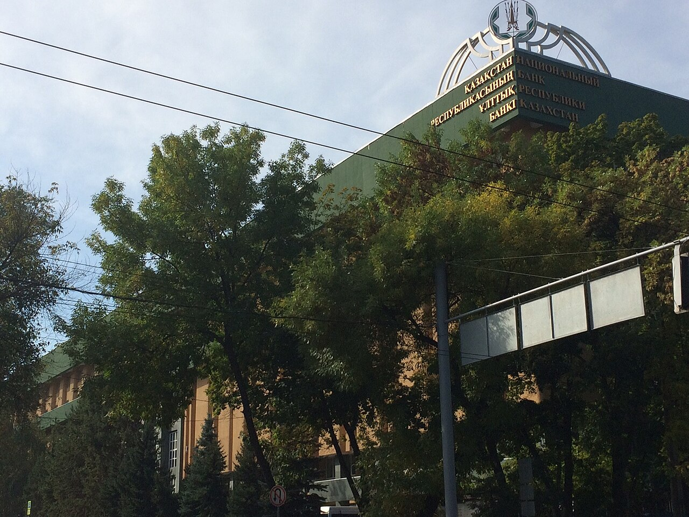
Kazakhstan sudah tanam US$190 juta dari cadangan crypto negara senilai US$700 juta ke hedge fund dan ETFKazakhstan has put US$190 million of its US$700 million state crypto reserve into hedge funds and ETFs
Wakil Gubernur Bank Nasional Kazakhstan Binur Zhalenov mengatakan sekitar US$190 juta dari cadangan crypto nasional senilai US$700 juta sudah diinvestasikan ke hedge fund dan ETF aset digital per akhir Oktober 2026. Ia juga menyebut Kazakhstan berinvestasi di Anthropic sejak 2025.National Bank of Kazakhstan Deputy Governor Binur Zhalenov said about US$190 million of the US$700 million national crypto reserve had been invested in digital-asset hedge funds and ETFs by the end of October 2026. He also said Kazakhstan has been invested in Anthropic since 2025.
Securitize, platform tokenisasi aset, akuisisi River One dan umumkan buyback US$50 juta; saham melonjak 41%Tokenization platform Securitize to acquire River One, announces US$50 million buyback; shares jump 41%
Securitize (NYSE: SECZ) melaporkan pendapatan kuartal III 2026 sebesar US$18,6 juta, naik 13%, dengan rugi bersih US$66,3 juta yang sebagian besar berasal dari biaya non-tunai terkait pencatatan saham. Perusahaan juga akan mengakuisisi River One dan mengumumkan program pembelian kembali saham US$50 juta.Securitize (NYSE: SECZ) reported Q3 2026 revenue of US$18.6 million, up 13%, with a net loss of US$66.3 million that came mostly from non-cash costs related to its listing. The company will also acquire River One and announced a US$50 million share buyback program.
Gubernur The Fed Waller dukung kenaikan suku bunga Desember, buka peluang 50 bps jika inflasi inti panasFed Governor Waller backs a December rate hike, opens the door to 50 bps if core inflation runs hot
Gubernur Federal Reserve Christopher Waller mengatakan di London bahwa ia akan mendukung kenaikan suku bunga 25 basis poin pada rapat FOMC Desember, bahkan jika inflasi Oktober membaik. Jika inflasi inti CPI sekitar 0,3% atau lebih, ia menilai kenaikan 50 basis poin perlu dipertimbangkan.Federal Reserve Governor Christopher Waller said in London that he would support a 25 basis point rate hike at the December FOMC meeting, even if October inflation improves. If core CPI inflation is around 0.3% or higher, he said a 50 basis point hike should be considered.
Trump Media cetak laba bersih US$409,7 juta di kuartal III berkat bitcoin, pegang sekitar 15.649 BTCTrump Media posts US$409.7 million Q3 net income on bitcoin gains, holds about 15,649 BTC
Trump Media & Technology Group (DJT), operator Truth Social, melaporkan laba bersih kuartal III 2026 sebesar US$409,7 juta, sebagian besar dari keuntungan non-tunai aset digital. Pendapatan tercatat US$3,0 juta. Per 30 September, perusahaan memegang sekitar 15.649 BTC, dan sekitar 11.385 BTC di antaranya dijaminkan ke program pengelolaan imbal hasil bitcoin.Trump Media & Technology Group (DJT), operator of Truth Social, reported Q3 2026 net income of US$409.7 million, mostly from non-cash gains on digital assets. Revenue was US$3.0 million. As of 30 September, the company held about 15,649 BTC, of which about 11,385 BTC were pledged to a bitcoin yield management program.

Cosmos serahkan protokol interoperabilitas IBC ke Linux Foundation Decentralized TrustCosmos hands its IBC interoperability protocol to Linux Foundation Decentralized Trust
Cosmos dan Interchain Foundation menyerahkan Inter-Blockchain Communication Protocol (IBC) ke LF Decentralized Trust, organisasi di bawah Linux Foundation. Kode IBC tetap open source dan bebas biaya, tetapi tata kelolanya kini berada di bawah piagam proyek publik yang netral.Cosmos and the Interchain Foundation have contributed the Inter-Blockchain Communication Protocol (IBC) to LF Decentralized Trust, an organization under the Linux Foundation. IBC's code stays open source and fee-free, but its governance now sits under a neutral public project charter.

Bank dan broker besar AS makin masuk crypto: Schwab buka trading SOL, AVAX, LINK; PNC uji terima pembayaran USDCBig US banks and brokers push further into crypto: Schwab opens SOL, AVAX, LINK trading; PNC pilots receiving USDC payments
Charles Schwab menambah Solana, Avalanche, dan Chainlink ke platform Schwab Crypto, sehingga total ada lima aset. Di hari yang sama, PNC Bank meluncurkan pilot bagi klien korporat untuk menerima pembayaran stablecoin USDC lewat Coinbase.Charles Schwab added Solana, Avalanche and Chainlink to its Schwab Crypto platform, bringing the total to five assets. On the same day, PNC Bank launched a pilot letting corporate clients receive USDC stablecoin payments via Coinbase.
IHSG melesat 1,66% di sesi I, rupiah jadi mata uang terkuat Asia pagi ini jelang data inflasi ASIDX Composite jumps 1.66% in session I, rupiah is Asia's strongest currency this morning ahead of US inflation data
IHSG ditutup naik 1,66% ke 5.158 pada sesi I Selasa (10/11), didorong saham perbankan besar. Rupiah juga menguat ke sekitar Rp18.050 per dolar AS. Pasar kini menunggu rilis inflasi (CPI) AS Oktober malam ini.The IDX Composite (IHSG) closed session I on Tuesday (10/11) up 1.66% at 5,158, driven by large bank stocks. The rupiah also strengthened to about Rp18,050 per US dollar. Markets are now waiting for tonight's US October inflation (CPI) release.

Satgas PASTI OJK hentikan 16 entitas investasi ilegal, ada modus sewa komputasi, "USDT", sampai nonton film dibayarOJK's PASTI Task Force shuts 16 illegal investment entities, with schemes ranging from computing rental and "USDT" to paid movie-watching
Satgas Pemberantasan Aktivitas Keuangan Ilegal (Satgas PASTI) menghentikan kegiatan 16 entitas yang diduga menipu lewat tawaran investasi. Modusnya antara lain tugas berbayar dengan setoran deposit, investasi kripto dan forex, iklan AI yang menampilkan tokoh publik, dan pencatutan nama perusahaan berizin.The Task Force for the Eradication of Illegal Financial Activities (Satgas PASTI) has halted the activities of 16 entities suspected of fraud through investment offers. The schemes include paid tasks with deposits, crypto and forex investment, AI ads featuring public figures, and impersonation of licensed companies.
MARA jual 13.597 BTC senilai sekitar US$1,1 miliar usai kuartal III, lunasi utang beragunan bitcoin US$750 jutaMARA sells 13,597 BTC worth about US$1.1 billion after Q3, repays US$750 million bitcoin-backed debt
Penambang bitcoin MARA Holdings mengungkap dalam surat pemegang saham kuartal III 2026 bahwa mereka menjual 13.597 BTC setelah kuartal berakhir dan memakai US$750 juta hasilnya untuk melunasi pinjaman beragunan bitcoin. MARA juga menyatakan akan terus memonetisasi bitcoin.Bitcoin miner MARA Holdings disclosed in its Q3 2026 shareholder letter that it sold 13,597 BTC after the quarter ended and used US$750 million of the proceeds to repay bitcoin-collateralized loans. MARA also said it will keep monetizing bitcoin.
OJK minta bank siaga 24 jam hadapi lonjakan serangan siber, transaksi anomali boleh dihentikan sementaraOJK asks banks to stay on 24-hour alert amid a surge in cyberattacks, anomalous transactions may be temporarily halted
OJK meminta seluruh bank meningkatkan kewaspadaan terhadap serangan siber, memantau transaksi signifikan, dan menghentikan sementara transaksi yang tidak wajar. OJK dan BI juga sudah mengaktifkan Tim Tanggap Insiden Siber.OJK asked all banks to raise their guard against cyberattacks, monitor significant transactions and temporarily halt unusual ones. OJK and BI have also activated a Cyber Incident Response Team.

Coinbase resmi kantongi piagam trust bank nasional penuh dari regulator bank AS (OCC)Coinbase officially secures a full national trust bank charter from US bank regulator OCC
OCC menyetujui piagam penuh Coinbase National Trust Company pada 6 November 2026. Coinbase kini bisa menjalankan layanan kustodi aset digital untuk institusi di bawah pengawasan federal AS.The OCC approved the full charter of Coinbase National Trust Company on 6 November 2026. Coinbase can now run digital asset custody services for institutions under US federal supervision.
Strategy beli lagi 1.036 BTC senilai US$81,9 juta, total kepemilikan jadi 850.364 BTCStrategy buys another 1,036 BTC worth US$81.9 million, bringing holdings to 850,364 BTC
Strategy membeli 1.036 BTC pada 2–8 November 2026 dengan harga rata-rata US$79.012. Di saat yang sama, perusahaan juga membeli kembali saham preferen STRC senilai US$188,3 juta.Strategy bought 1,036 BTC between 2 and 8 November 2026 at an average price of US$79,012. At the same time, the company also repurchased US$188.3 million of STRC preferred shares.
Bitcoin sempat sentuh level terendah sejak Agustus, ETF BTC catat arus keluar US$1,28 miliar jelang data inflasi ASBitcoin briefly hits its lowest since August, BTC ETFs see US$1.28 billion outflow ahead of US inflation data
Bitcoin sempat turun ke sekitar US$73.761 dan likuidasi tembus US$1 miliar. ETF bitcoin spot AS mencatat arus keluar mingguan terbesar sejak Juni, sementara data tenaga kerja AS yang kuat dan rilis CPI Oktober malam ini jadi sorotan.Bitcoin briefly fell to about US$73,761 and liquidations topped US$1 billion. US spot bitcoin ETFs recorded their biggest weekly outflow since June, while strong US jobs data and tonight's October CPI release are in focus.
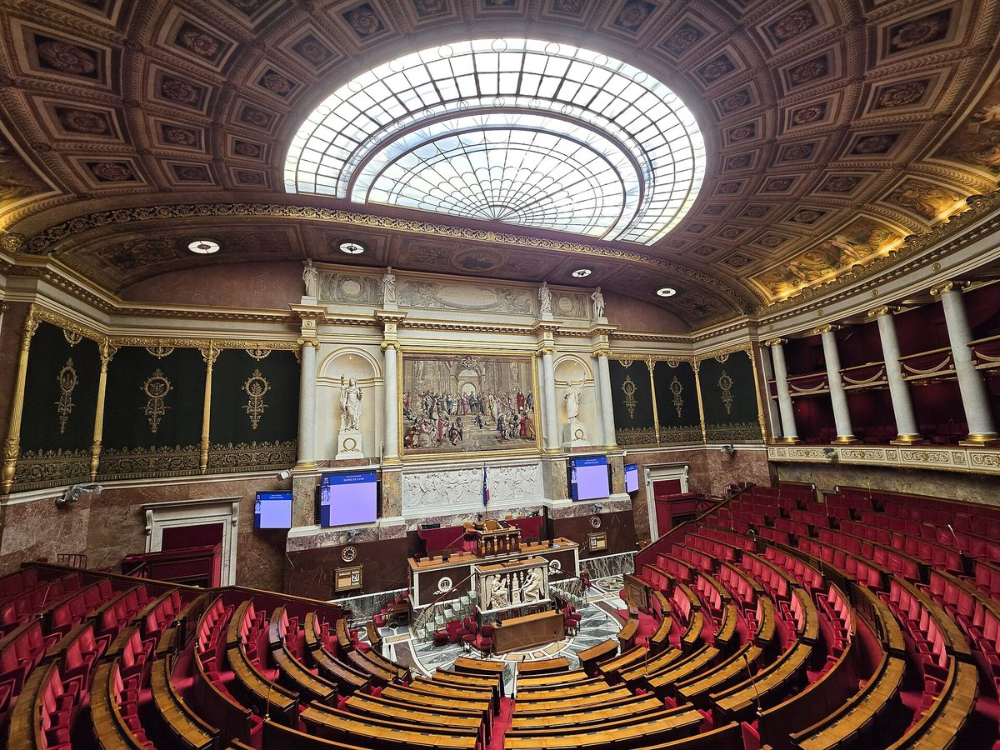
Parlemen Prancis tolak RUU anggaran 2027, aturan wajib lapor wallet crypto ikut gugur (untuk sementara)French parliament rejects 2027 budget bill, crypto wallet reporting rule falls away (for now)
Assemblée nationale menolak bagian pendapatan RUU anggaran 2027, sehingga tiga amandemen terkait crypto, termasuk kewajiban melapor wallet self-custody senilai €100.000 ke atas, tidak ikut dibawa ke Senat.The Assemblée nationale rejected the revenue part of the 2027 budget bill, so three crypto-related amendments, including a duty to report self-custody wallets worth €100,000 or more, will not go to the Senate.
Ekonomi RI tumbuh 5,47% di kuartal III 2026, IHSG melonjak 2,25% dan rupiah menguatIndonesia's economy grows 5.47% in Q3 2026, IHSG jumps 2.25% and the rupiah strengthens
BPS mencatat pertumbuhan ekonomi Indonesia kuartal III 2026 sebesar 5,47% secara tahunan. Pada hari yang sama IHSG ditutup naik 2,25% ke 5.030 dan rupiah menguat ke Rp18.082 per dolar AS.Statistics Indonesia (BPS) recorded Q3 2026 economic growth of 5.47% year on year. On the same day the IHSG closed up 2.25% at 5,030 and the rupiah strengthened to Rp18,082 per US dollar.
OJK: transaksi kripto RI September 2026 tembus Rp30,56 triliun, 5 penyelenggara kena sanksiOJK: Indonesia's crypto trading hit Rp30.56 trillion in September 2026, 5 operators sanctioned
Nilai transaksi aset kripto di Indonesia naik 31,96% secara bulanan pada September 2026. OJK juga menjatuhkan sanksi ke lima penyelenggara dan menanggapi insiden keamanan Binance.Crypto trading value in Indonesia rose 31.96% month on month in September 2026. OJK also sanctioned five operators and responded to the Binance security incident.
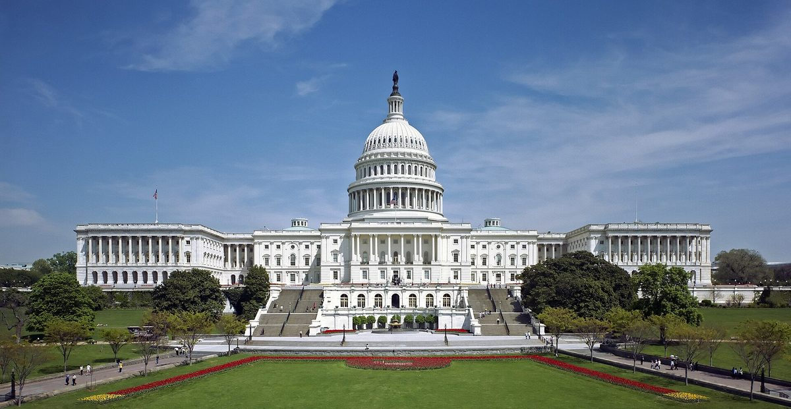
Bitcoin balik ke atas US$80.000 setelah Demokrat menangi Kongres AS, nasib RUU CLARITY dipertanyakanBitcoin back above US$80,000 after Democrats win the US Congress, CLARITY bill's fate in doubt
Bitcoin pulih ke kisaran US$80.000 setelah Partai Demokrat menang di DPR dan Senat AS pada pemilu sela 3 November. Pelaku industri menilai RUU struktur pasar crypto CLARITY makin sulit lolos.Bitcoin recovered to around US$80,000 after the Democratic Party won the US House and Senate in the 3 November midterms. Industry figures say the CLARITY crypto market structure bill now looks harder to pass.

Tekanan jual BTC naik: short-term holder kirim 36.600 BTC ke exchange dalam kondisi rugiBTC selling pressure rises: short-term holders send 36,600 BTC to exchanges at a loss
Menurut CryptoQuant (analis Darkfost), lebih dari 36.600 BTC dikirim ke exchange dalam 24 jam setelah BTC menyentuh US$76K.According to CryptoQuant (analyst Darkfost), more than 36,600 BTC were sent to exchanges within 24 hours after BTC touched US$76K.
Coinbase untung US$719 juta di Q3 2026, tapi sahamnya anjlok sekitar 13%Coinbase earns US$719 million in Q3 2026, but its stock drops about 13%
Laba bersih naik, tetapi pendapatan total turun 35% dan pendapatan transaksi anjlok sekitar 44%.Net income rose, but total revenue fell 35% and transaction revenue dropped about 44%.
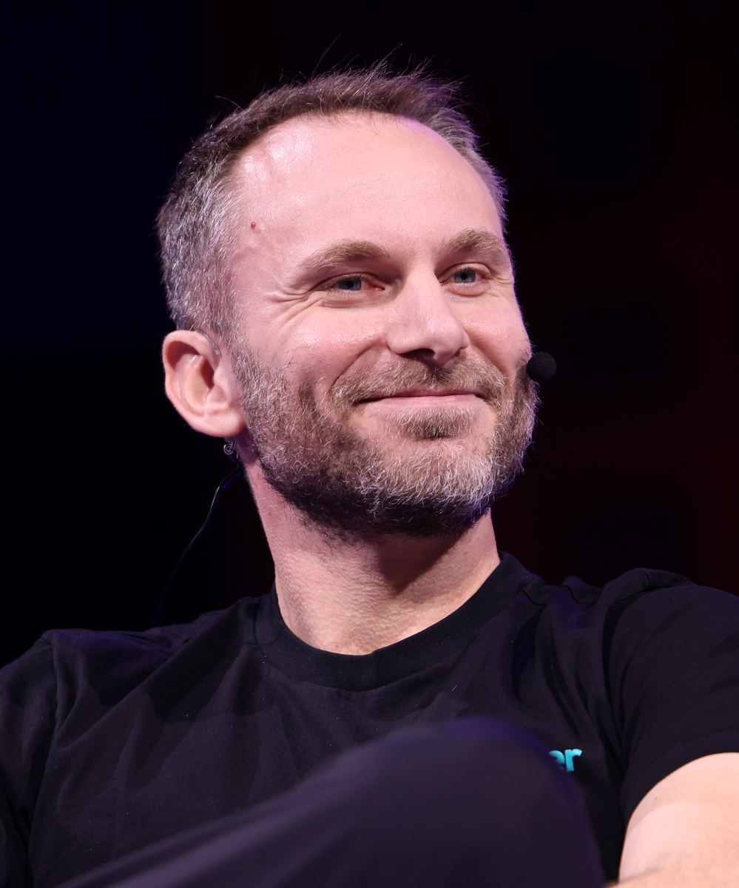
Tether cetak laba US$1,5 miliar di Q3 2026, cadangan lebih naik hampir dua kali lipatTether posts US$1.5 billion profit in Q3 2026, excess reserves nearly double
Laporan Q3 2026 yang diatestasi BDO menunjukkan laba operasional bersih Tether US$1,5 miliar dan cadangan lebih US$7,95 miliar.Tether's Q3 2026 report, attested by BDO, shows US$1.5 billion in net operating profit and US$7.95 billion in excess reserves.
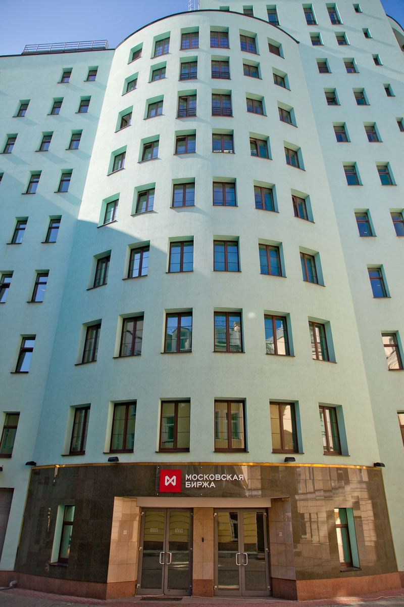
Rusia buka trading Bitcoin di bursa resmi mulai 1 DesemberRussia opens Bitcoin trading on its official exchange from 1 December
Moscow Exchange berencana membuka perdagangan Bitcoin, Ethereum, dan USDT mulai 1 Desember 2026.Moscow Exchange plans to open trading in Bitcoin, Ethereum and USDT from 1 December 2026.

Whitepaper Bitcoin genap 18 tahun hari iniThe Bitcoin whitepaper turns 18 today
Pada 31 Oktober 2008, Satoshi Nakamoto mengumumkan paper sembilan halaman tentang uang elektronik peer-to-peer.On 31 October 2008, Satoshi Nakamoto announced a nine-page paper on peer-to-peer electronic cash.

Trezor Safe 5 dari Tokopedia diduga dipasangi alat penyadapTrezor Safe 5 bought on Tokopedia allegedly fitted with a spy implant
Trezor menilai laporan implan perangkat keras pada Trezor Safe 5 dari seorang pembeli di Indonesia kredibel, namun belum memeriksa perangkatnya di lab.Trezor considers a report of a hardware implant in a Trezor Safe 5 from a buyer in Indonesia credible, but has not yet examined the device in its lab.
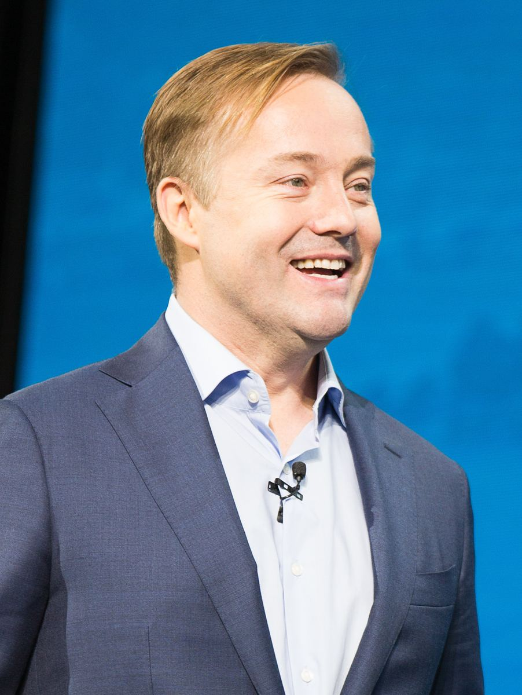
"Bitcoin tidak akan pernah tembus rekor lagi" — lalu ada yang taruhan US$1 juta"Bitcoin will never break its record again" — then someone bet US$1 million
Grant Cardone menantang pernyataan Jason Calacanis dengan taruhan US$1 juta; belum ada kesepakatan yang didanai.Grant Cardone challenged Jason Calacanis's claim with a US$1 million bet; no funded agreement exists yet.

Binance dibobol ±US$6,3 miliar: hack crypto terbesar sepanjang sejarah?Binance hacked for ±US$6.3 billion: the biggest crypto hack in history?
Menurut TRM Labs, Binance jadi korban serangan senilai sekitar US$6,3 miliar di 10 blockchain, sebagian besar dana tersedot dalam ±20 menit.According to TRM Labs, Binance was hit by an attack worth about US$6.3 billion across 10 blockchains, with most of the funds drained in ±20 minutes.
Ikuti COIN BRO diFollow COIN BRO on Telegram
Berita crypto yang diverifikasi, langsung di Telegram. Gratis.Verified crypto news, straight to Telegram. Free.